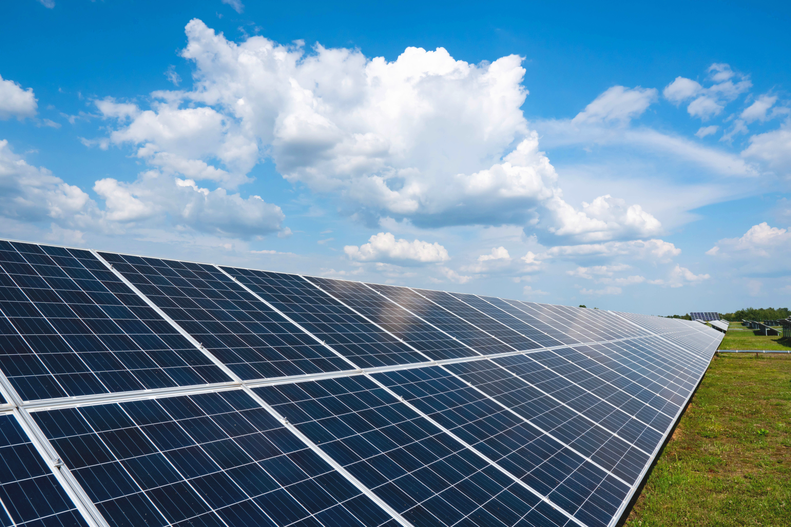

Pengertian

Renewable Energy (Energi Terbarukan), adalah energi yang berasal dari sumber-sumber
alam yang dapat diperbarui atau diisi ulang secara alami dalam jangka waktu yang relatif
singkat. Sumber-sumber energi ini tidak akan habis atau habis pakai, berbeda dengan bahan
bakar fosil seperti minyak bumi, batu bara, dan gas alam yang membutuhkan jutaan tahun
untuk terbentuk kembali.
Sejarah penggunaan energi terbarukan sudah dimulai sejak zaman kuno ketika manusia pertama
kali memanfaatkan tenaga air dan angin untuk keperluan irigasi dan penggilingan biji-bijian.
Penggunaan tenaga air untuk menggerakkan kincir air telah ada sejak 2000 tahun yang lalu di
berbagai peradaban, termasuk di Mesir dan Mesopotamia. Begitu juga dengan tenaga angin yang
telah digunakan untuk menggerakkan kapal layar sejak ribuan tahun yang lalu.
Saat ini, penggunaan energi terbarukan semakin mendesak karena perubahan iklim dan kebutuhan
untuk mengurangi emisi gas rumah kaca serta polusi udara. Energi terbarukan tidak hanya ramah
lingkungan tetapi juga menawarkan solusi jangka panjang untuk ketahanan energi global.
Produk dan Layanan
Produk dan layanaan kami yang berfokus pada energi terbarukan. Kami menawarkan solusi inovatif
dan berkelanjutan untuk memenuhi kebutuhan energi Anda sekaligus menjaga lingkungan. Berikut
adalah beberapa produk utama kami:
Panel Surya

Panel surya kami menggunakan teknologi fotovoltaik terbaru yang mampu mengubah sinar matahari
menjadi listrik dengan efisiensi tinggi. Didesain untuk tahan lama dan dapat dioperasikan dalam
berbagai kondisi cuaca. Produk ini memiliki beberapa keunggulan di bandingakan produk lainnya, antara lain:
- Efisiensi konversi energi tinggi
- Biaya pemeliharaan rendah
- Mengurangi tagihan listrik secara signifikan
- Ramah lingkungan, tanpa emisi gas rumah kaca
Biomassa dan Biogas

Kami menyediakan solusi biomassa dan biogas untuk mengubah limbah organik menjadi energi yang
dapat digunakan. Ini adalah solusi ideal untuk pertanian, industri, dan komunitas yang ingin
memanfaatkan limbah mereka secara efektif. Produk ini memiliki beberapa keunggulan di bandingakan produk lainnya, antara lain:
- Mengurangi volume limbah dan polusi
- Produksi energi berkelanjutan
- Dapat digunakan untuk menghasilkan listrik dan panas
- Mendukung praktik pertanian dan industri berkelanjutan